Redesign, launch, and iterations of an idea prioritization module for Product Managers.
Kicked off through an evidence-driven redesign informed by usability research, followed up by launching and iterating on a MVP through close collaboration with Engineering and Product.
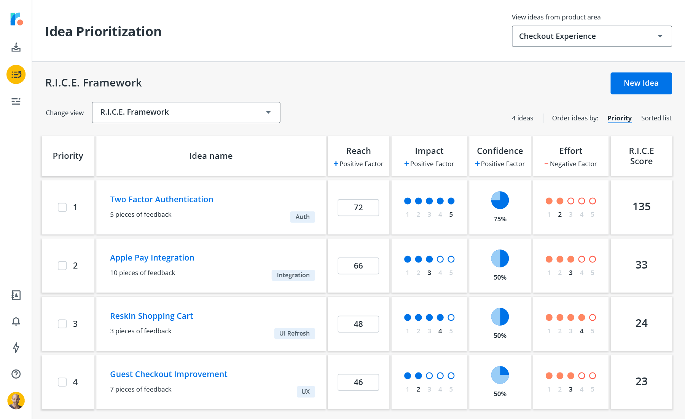
Role
Design lead
Evaluative research
Interaction design
Usability studies
Triad Peers
Kyle Aziz (PM)
Sabina Simons (DM)
Duration
Dec 2019 - Nov 2020
The Situation
Roadmunk is a high-growth startup whose bread and butter offering is a software solution that allows customers to easily and quickly create visually stunning roadmaps.
When I joined the project the organization was faced with three major problems with the core offering for roadmapping.
Roadmapping is a monthly if not seasonal ritual, resulting in low user stickiness
The tech stack upon which roadmapping is built is slow to ship and slow to use
No defined audience - when you design and build for everyone you design for no one
The combination of these problems results in a life-time value of just 4 years for the average subscriber, and a lot of customer churn for the business. To tackle these issues, a new product line was planned to be built to capture more PMs as customers, and allow existing customers to engage more periodically with the product (as opposed to only using Roadmunk on a monthly cadence).
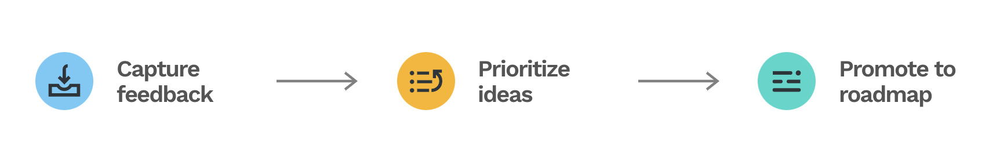
Customer feedback are collected, ideas are prioritized before they are promoted into features.
The new product area "Feedback and Idea Management" (or FIM for short) will be tailored specifically towards the workflow of Product Managers, that's built upon a modern techstack using React. By the time I joined the team the project had already ran for 8 months, with a fast approaching deadline.
Problems Discovered from Research
One of the first things we did after joining the team was to conduct a series of 1-hour user research sessions. The participants composed of both existing and prospective customers. The format included semi-structured interviews as well as usability testing sessions to evaluate both product-market fit, as well as the ease of use of the prototype. Up until this point, the product prototype had not been evaluated against live users.
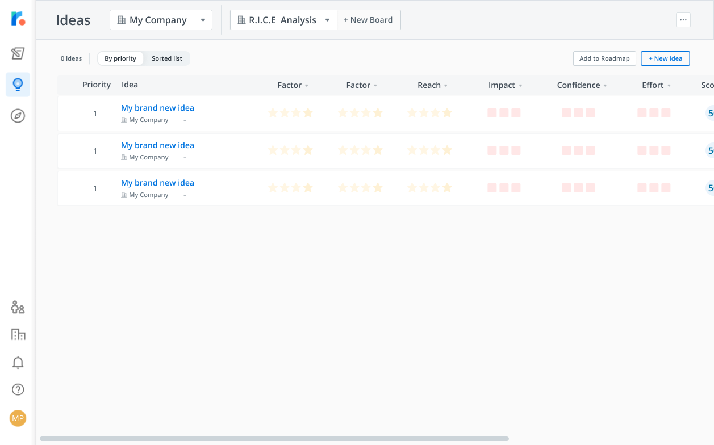
The prototype that was tested with existing and prospective users
Here's what we learned,
Actual experience ≠ user mental model
From research, we uncovered that the presented workflow on the board did not resonate with how the PMs are used to working. For example, the canvas experience behaved different from user expectations - product managers familiar with the RICE prioritization framework know that the RICE score is calculated as Reach x Impact x Confidence ÷ Effort. The way the score is calculated on the canvas doesn't follow said formula.
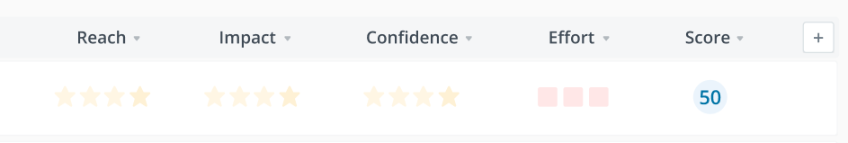
The canvas values here imply 0 x 0 x 0 ÷ 0 = 50
Connection between factors and score calculation is unclear
It is unclear to the users why certain factors are assigned the values they have, and how the shapes, and colours of the values contribute to the given scores. Why do 4 stars and 2 squares equal 67?
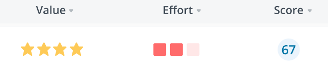
Certain features added friction while contributing little value
What we discovered from research was that investment was made towards certain features that were low desirability and usefulness that added friction to the workflow. The value proposition for FIM was to allow PMs to quickly prioritize and quantify different idea.
For example, the factors (page values) were far too customizable - users must select the colour and shape of the rating factors before using them. The default colour and shapes of many factors also didn’t accurately correlate with the data they were supposed to represent.
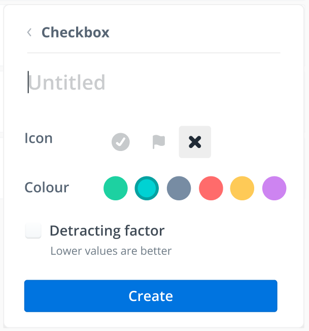
The setup for Idea Prioritization is complex and hidden
The pre-existing feature prioritization workflow required a lot of set up that were hidden and hard to find. For a user to start finding value in the idea prioritization module, they need to...add product areas, add components, add the new ideas manually, customize the board to include the factors they need for the prioritization, then assign factor values for each idea individually.
Low discoverability and unclear signifiers
At a glance it is not clear on the page what elements are interactable, and what the different dropdowns represent. Users had trouble finding their way through the app, and what they expected the dropdowns and interactions to be often defied their expectations.
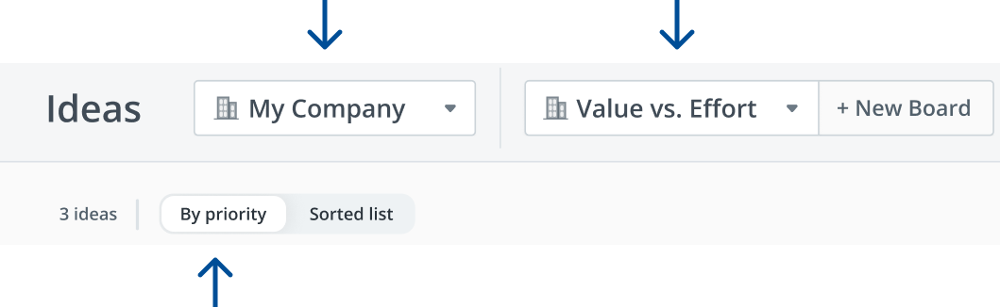
The functions of the dropdowns are unclear at a glance.
The Proposed Solution
Goals
Align the designed solution with actual user mental models to improve product-market fit.
Surface affordances by providing appropriate signifiers to increase discoverability.
Minimize CS efforts for teaching and onboarding in favour for a self-sufficient experience for users
Make it a tool that's usable out of the box instead of requiring a lot of setup to realize value.
Worked with PM to arrive at the right metrics to define success.
Constraints and Challenges
The UI toolkit chosen (blueprint.js) was limited in its customizability, so interaction compromises had to be made.
Long project runtime with a lot of crunch - development morale was a major issue.
Large sets of features had to be cut from scope to accommodate the deadline for launch before the start of Q2.
Different options explored
I always design from a moodboard formed from a variety of different sources - competitive analysis, conventional interaction design patterns that users would be familiar with, and other adjacent experiences that may be applicable. In other words, a mishmash of different prototypes are often "frankensteined" together when I design.
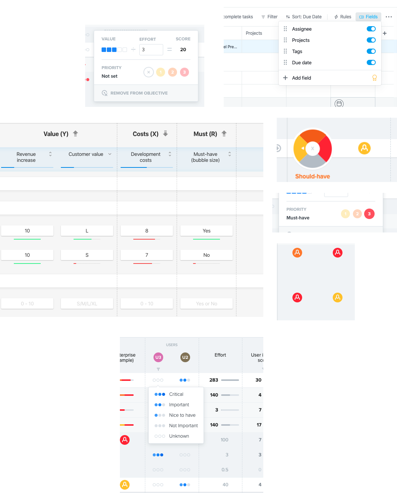
Competitive analysis of the boards and factors.
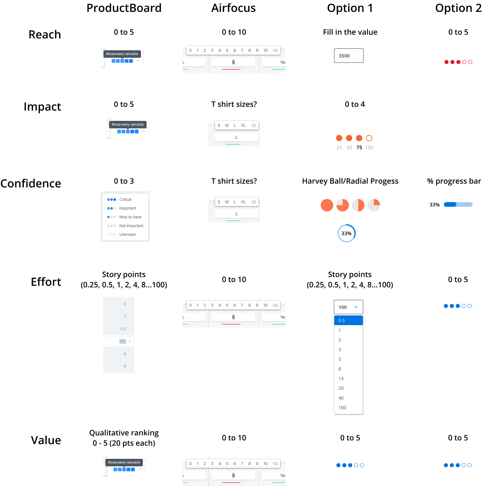
Options explored for different ways of representing factors.
What we ultimately launched
The final iteration below went through several rounds of internal stakeholder feedback, while taking into consideration the business goals and technical constraints. User feedback was also incorporated to land on the final iteration. The total iteration from research to design to launch were completed under 3 months.
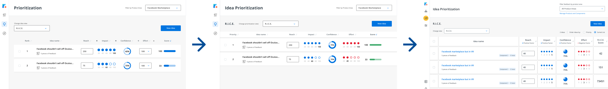
Different iterations the page went through before landing on the final design
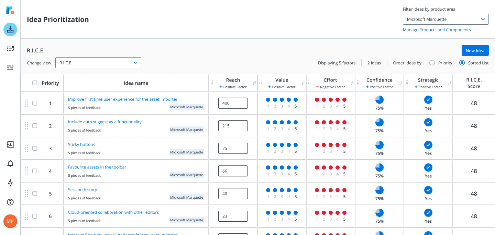
What we ultimately launch - this is what is live today.
Collaboration with other teams
Morale amongst the engineers was definitely a challenge when I joined the project. The project had been running on a crunch schedule for 2 months at this point, with most of the features already BUILT out. On the verge of engineering burn out, a new design team came and introduced a lot of evidence indicating problems with the existing build. The teams were also split across two separate offices, with the developers in Kitchener-Waterloo and all the designers in Toronto — the remote working conditions were less conducive to organic collaboration.
The atmosphere was visibly tense when the design team suggested changes to the existing build given all the work that has already been put in. There was initial reluctance to collaborate and communicate between the teams. I had to navigate the situation carefully and try my best to bridge the collaboration and communication gap through a couple of different strategies.
Evoke empathy for the user pains to align on purpose
I started involving influential members of the development team to join me on user calls to evoke a shared sense of the empathy. The perception within engineering up until this point felt as if design & product overlords were arbitrarily ordering the engineers around to do their bidding. These calls aligned us on the core goal of the project - which is to deliver a better experience for the end users. By involving development directly in understanding customer frustrations, it became much easier to influence development ICs on design decisions.
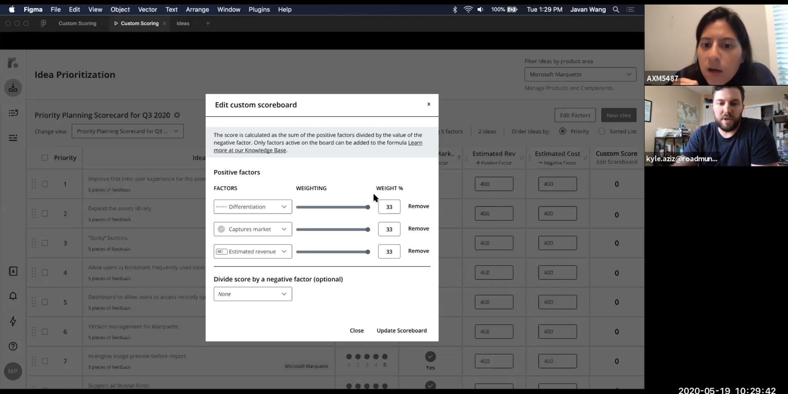
Taking prototype testing calls together with both PMs and devs
"Asset sheet" to speed up collaboration
Due to the timeline, it wasn't possible to introduce a full design system into the project. I created a master asset sheet in Figma that as a "stop-gap" DS. This asset sheet documents transitions, states, and interactions of common components to increase consistency between pages.
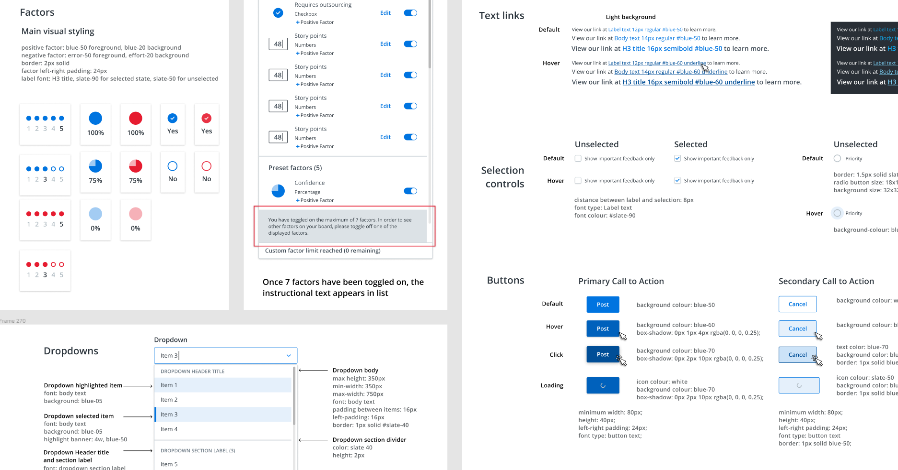
The asset sheet did a lot to bridge communication and collaboration gaps, the effort did not go unnoticed by members of the development team.
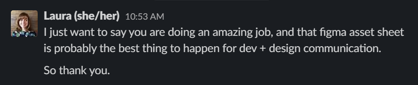
Iterations After Launch
As a business we decided to constraint the amount of options people have access to at launch to create opportunities for monetization. 2 default boards and 5 factors were available at launch. We want to get a sense of how many boards were created and how many factors were made and iterate from there.
A mix of quantitative and qualitative feedback was gathered to determine where to take the product area post-launch. Quantitative feedback was managed by the PM assigned to the project to monitor activity.
Qualitative feedback was gathered through multiple forms - surveys from Chameleon as well as user research to gather testimonials on what needed to change to increase adoption. I ran a mix of moderated (Zoom & Figma) and unmoderated (using Maze.design) usability testing sessions to evaluate desirability and usability of the new features.
Moderated usability tests.
Unmoderated tests done through Maze.design
Custom scoring
Only preset boards (RICE and Value vs Effort) had scores attached to them at the time of launch. Custom scoring was something we decided must be worked on post-launch after receiving feedback from a combination of different sources - Chameleon feedback forms, in-app user feedback, customer success calls, to arrive at the solution.
I worked with the product and engineering team to ship, test, and launch the custom scoring. After a rigorous problem definition and competitive analysis phase, I tested low-fidelity prototypes of the feature with 17 different users (mix of moderated and unmoderated tests) prior to marking the designs as ready for development. From project kick-off to implementation ready, this was achieved under 6 weeks.
Import ideas through CSV
From quantitative data we noticed a low usage and adoption rate for idea prioritization after the product area was launched. User research uncovered one of the reasons why there was low adoption rate - user data already lived elsewhere, and since manual entry was the only way to add the data into the system, the amount of effort required for migration wasn't worth the value added.
Reflection on the Project
Strong collaboration with product and engineering leads to focus and success
Despite the tight timeline, and morale challenges the project faced, a lot focus was put into relationship building with both product and engineering. The best way I've found to do this was to build trust through honesty and collaboration through aligning on the same goals - which is to deliver value to customers. I involved engineers and PMs whenever possible in usability testing calls to evoke that empathy for the user.
Build and ship in increments, embrace bias to action
Scope is negotiable but the minimum amount of value the product needs to deliver to satisfy customer needs are not. One of the biggest takeaways is to test early and often, and get feedback from both internal and external stakeholders.
Getting insights early while exploring different options allows one to derisk solutions. This allows teams, not just designers to be more confident and knowledgeable. Removing ambiguity is key to shipping quickly and successfully.
Include both business and behavioural metrics
A frustrated user might still pay for the app - it doesn't mean certain features have a good workflow. A feature that's well optimized for usability and frequently used may not generate the most revenue for sales. A mix of both metrics would be useful to get a better sense of what's working and what isn't.
In retrospect, there was a plethora of business oriented metrics across the app focused on measuring churn, but since churn and ARR retention is a lagging indicator it's hard to track performance and usability quantitatively and precisely this way.
Usability studies don't always hold the answers
Throughout the case study I've spoken at length about how valuable user research has been for increasing the level of confidence for product and design. However, overindexing on the feedback of a few users could lead one down the wrong path of solutioneering. A second opinion is vital when discussing findings to see where the true problems lie - important to ask if there is a problem at all.